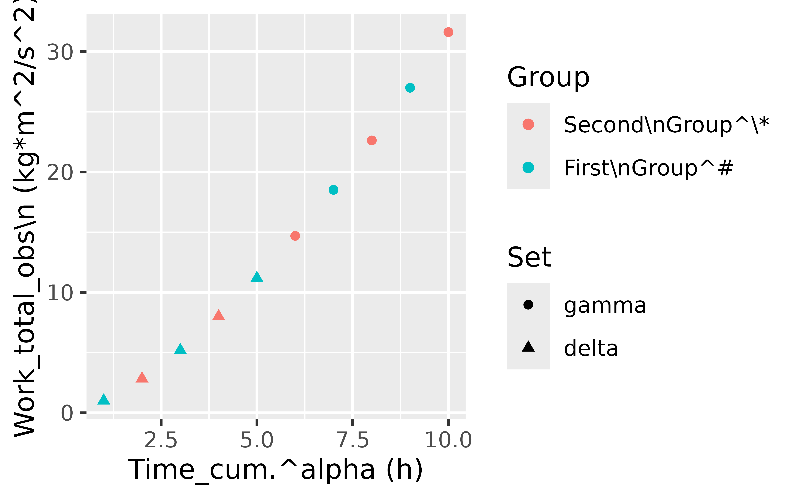
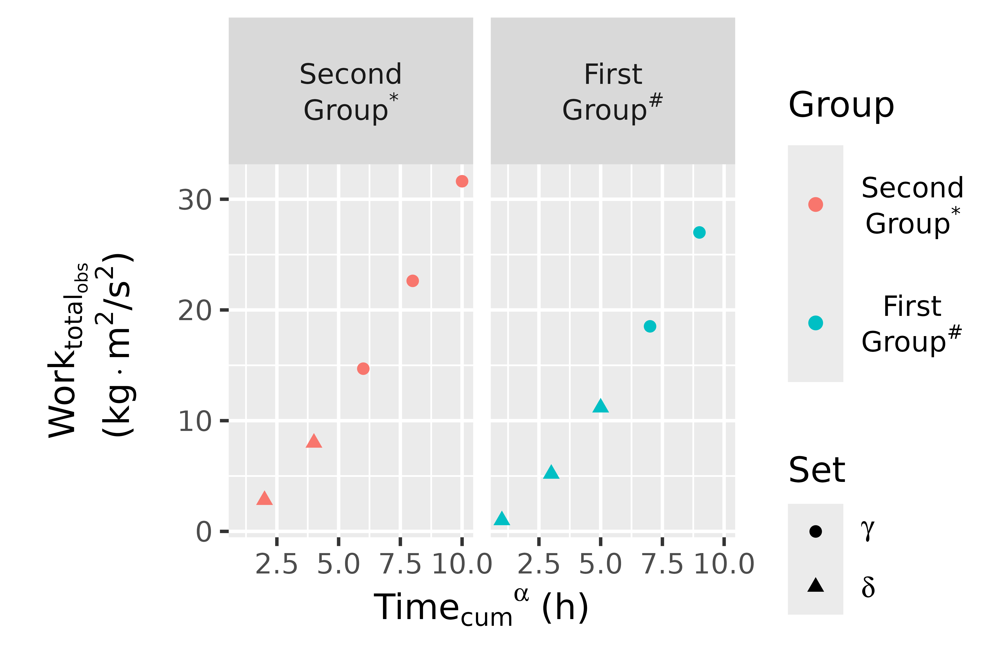

The point of this exercise is to demonstrate flexible rendering of subscripts and superscripts. We want to write expressions for column labels and units that are fairly readable as they are, and yet can be easily rendered with equivalent results in plotmath, html, or pdf.
First we load some packages.
library(magrittr)
library(ggplot2)
library(tablet)
library(yamlet)
library(dplyr)
library(kableExtra)We create some example data.
x <- data.frame(
time = 1:10,
work = (1:10)^1.5,
group = 1:2,
set = c(rep('delta',5), rep('gamma', 5))
)
x %<>% decorate('
time: [ Time_cum.^alpha, h ]
work: [ Work_total_obs\\n, kg*m^2/s^2 ]
group: [ Group, [ Second\\nGroup^\\*: 2, First\\nGroup^#: 1 ]]
set: [ Set, [ gamma, delta ]]
')
x %>% decorations## - time
## - label: Time_cum.^alpha
## - guide: h
## - work
## - label: Work_total_obs\n
## - guide: kg*m^2/s^2
## - group
## - label: Group
## - guide
## - Second\nGroup^\*: 2
## - First\nGroup^#: 1
## - set
## - label: Set
## - guide: gamma, deltaThe label for column work has nested subscripts
suggesting $\sf{Work_{total_{obs}}}$.
The label for column time suggests $\sf{Time_{cum}{}^{\alpha}}$. The dot closes
the subscript to distinguish this from $\sf{Time_{cum^{\alpha}}}$. Backslash-n
requests a line break.
How does this look when we plot it?
x %>%
resolve %>%
ggplot(aes(time, work, color = group, shape = set)) +
geom_point()
By default, we get verbatim labels and units as substitutes for column names.
Next, we use enscript() instead of
resolve() to indicate that the labels should be understood
as potentially having subscripts and superscripts. For this to work
well, units should be constructed using *, /, and ^ (even though the
“units” package supports other encodings).
x %>%
enscript %>%
ggplot(aes(time, work, color = group, shape = set)) +
facet_grid(~ group) +
geom_point()
In the background, enscript() is writing
expression and plotmath attributes
(consumed by ggplot() ) and title
attributes (consumed by tablet() ). We illustrate the
latter.
|
γ (N = 3) |
δ (N = 2) |
γ (N = 2) |
δ (N = 3) |
All (N = 10) |
|
|---|---|---|---|---|---|
| Timecumα (h) | |||||
| Mean (SD) | 8 (2) | 3 (1.41) | 8 (1.41) | 3 (2) | 5.5 (3.03) |
| Median (range) | 8 (6, 10) | 3 (2, 4) | 8 (7, 9) | 3 (1, 5) | 5.5 (1, 10) |
| Missing | 0 | 0 | 0 | 0 | 0 |
|
Worktotalobs (kg·m2/s2) |
|||||
| Mean (SD) | 23 (8.47) | 5.41 (3.66) | 22.8 (6) | 5.79 (5.12) | 14.3 (10.5) |
| Median (range) | 22.6 (14.7, 31.6) | 5.41 (2.83, 8) | 22.8 (18.5, 27) | 5.2 (1, 11.2) | 12.9 (1, 31.6) |
| Missing | 0 | 0 | 0 | 0 | 0 |
In summary, we have decorated our data with labels and units containing markup for subscripts and superscripts. If everything goes well, these render similarly in figures and tables. They also render similarly in html and pdf. Please see the pdf version of this document.